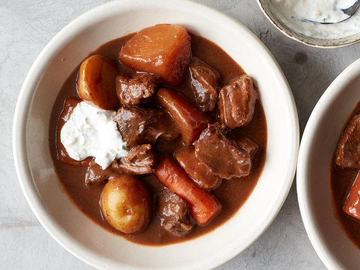

Beef Stew

Description
A simple and hearty beef stew I make for my family.
There's nothing more comforting on a cold night than a big bowl of stew.
Ingredients
- 3 pounds beef chuck, fat trimmed and meat cut into 2-inch pieces
- 2 tablespoons plus 1/3 cup all-purpose flour
- Kosher salt and black pepper
- ¼ cup vegetable oil
- 3 large garlic cloves, chopped
- 2 dried shiitake mushrooms, halved (optional)
- 2 tablespoons tomato paste
- 2 teaspoons packed brown sugar
- 1 teaspoon unsweetened cocoa powder
- 1 teaspoon onion powder
- ½ teaspoon caraway seeds
- ½ teaspoon instant espresso powder
- 2 ½ cups Guinness or other stout beer
- 2 ½ cups beef broth or stock
- 2 fresh thyme sprigs
- 1 pound red or Yukon gold potatoes, cut into 1- to 2-inch pieces
- 1 to 1 ½ pounds root vegetables, such as carrots, turnips, rutabaga, celery root, or parsnips, peeled and cut into 1- to 2-inch pieces
- 1 tablespoon balsamic vinegar
- 1 teaspoon Worcestershire sauce
- 1 teaspoon lemon juice, plus more to taste
- ¾ cup sour cream
- 3 tablespoons jarred horseradish
- ¼ cup minced scallions or chives
Steps
- In a large bowl, combine the beef and 2 tablespoons flour. Season generously with salt and pepper and toss to coat. Set aside.
- Using the sauté setting, heat the oil in the pot. Add the garlic, dried shiitakes (if using), tomato paste, brown sugar, cocoa, onion powder, caraway seeds and espresso powder. Cook, stirring constantly, until the mixture is fragrant and evenly combined, 1 to 2 minutes. Add the remaining 1/3 cup flour and cook, stirring and scraping constantly, until the mixture forms a thick, dry paste, about 1 minute.
- Add the beer and broth and bring to a boil, whisking constantly to scrape any browned bits from the bottom of the pot. Let boil until noticeably thickened, about 1 minute. Add the beef and thyme and stir to combine. Cover and set steam valve to sealed position. Cook on high pressure for 22 minutes.
- Let the pressure release naturally for 5 minutes, then release the remaining pressure manually. (If you find that too much liquid is spurting out with the steam, close the knob to seal again, wait a minute, and then turn the knob to release the rest of the pressure.) Open and stir in the potatoes and root vegetables. Set steam valve to sealed position and cook on high pressure for 10 minutes. Allow the pressure to release naturally for 10 minutes, then release the remaining pressure manually.
- Open the lid. If the beef and vegetables are not tender, pressure cook on high for 3 more minutes and manually release the pressure. Add the vinegar, Worcestershire sauce and lemon juice. Taste and season with more salt, pepper and lemon juice if necessary. (If the stew tastes flat, add more lemon juice first, then more salt and pepper; acid is key to making it taste lively. It may need a surprising amount of salt, especially if you have used unsalted or low-salt stock.)
- Discard the thyme sprigs and skim the fat from the top using a ladle or by passing a clean paper towel just over the surface of the stew. (If you would like the stew to be thicker, transfer the beef and vegetables with a slotted spoon to a bowl or plate. Using the sauté setting, let boil until it is the desired consistency. Add the beef and vegetables back into the pot.)
- Make the horseradish cream: Stir together the sour cream, horseradish and scallions in a small bowl. Season with salt. Serve stew in bowls with a spoonful of the horseradish cream.
Return to Main Page